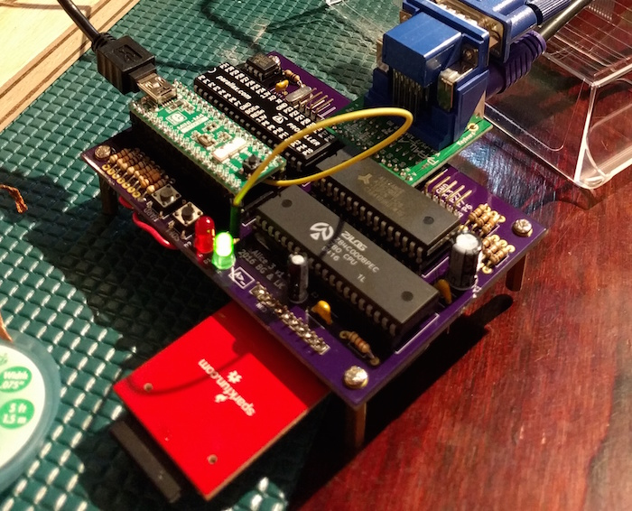

Alice 3
In 1995, we built a Z80 computer, the Alice 2. We could download programs to it and display images in an NTSC bitmap. It didn't work very well.
In 2015, Brad cleaned up his house and tried to power on the Alice 2. Although it powered on, we couldn't reliably run any programs on it.
After trying to make it work again for a few months, we scrapped all the old hardware and decided to use modern chips and tools, with the goal of running CP/M 2.2 on a silicon Z80.
The Alice 3 uses a Propeller for VGA video and an ARM Cortex M4 for SD card and PS/2 keyboard. The Propeller takes individual ASCII bytes from the CPU and writes them to the VGA screen, pretending to be a VT-100 terminal. Reverse video is also supported. As a bonus, the ARM can use the same mechanism to write to the screen, which has been useful when debugging I/O problems.
Our first version was on three breadboards. It was pretty flaky, working sometimes and then not working two minutes later after we had brushed up against some wires. We got it working intermittently but decided that we wouldn't make any more progress with stability until we moved to a PCB.

Our second version used through-hole components on a PCB, with off-the-shelf daughter boards for the ARM, VGA connector, and SD card connector. We accidentally forgot to connect a bunch of ground and power sections (thanks to a terrible user interface in KiCAD). That was painful to fix by hand, but it then worked on the first try.

Our third and final version used surface-mount components, getting rid of all daughter boards. When we started to assemble it we realized that we had ordered the wrong SRAM part from Digi-Key. This turned out to be fine, though, since the ARM, at 168 MHz, is more than fast enough to monitor the 2 MHz Z80's address and data bus and simulate 64 KB of memory.

The computer boots to a CP/M prompt, where the SD card provides several megabytes of original software. You can run WordStar, Turbo Pascal, MBASIC, and Sargon Chess.

The GitHub repository contains the ARM and Propeller firmware, Z80 boot ROM, Z80 CP/M BIOS, KiCAD project for the PCB, and an emulator.
We produced the PCBs at OSHPark (through-hole, surface-mount). Let us know if you want the BOM so you can build it yourself.